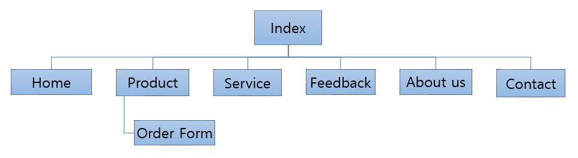

CP1406 - Assignment 2 - Project Plan
Diazepam Cafe
Group 7
Park Ji Hyun
Lim Hui Ching
Evando Wylie
Ng Qi Yi
Mission Statement
The Diazepam Café website is intended to increase revenue by promoting the products and services offered by the café and increase the number of repeat customers.
Success Evaluation
Other advertising will be consistent for a period of 3 months (except for including the new web site), so that any increase in sales should be attributable to the site. At the end of this 3 month period (and during), the number of new customers will be counted and compared to the previous 3 months. Also, the bounce rate can be counted to check how many people are interested in knowing the website.
Target Audience
Local residents, mostly teenagers, young adults and parents (who have young children). This will be the target audience of the website aimed.
Content
- Home page
- In home page, we will include the latest announcement such as the grand opening and upcoming event.
- Product page
- In the product page, we will include all products (with photos) which offered by Diazepam café. Order form will be in this page as after visitor see all the products, they can make their order in the same page.
- Service page
- In this page, we will include services which provided by Diazepam café such as happy hours, family & friend special and delivery services. We also includes the exchange and return terms and conditions.
- Feedback page
- In this page, there is a feedback form for customer to submit their comments after visiting our website.
- About us page
- Information about Diazepam café, the goal of café and brief information about the founder.
- Contact page
- In this page, we will include address, contact details, email and social media (facebook, twitter)
Site Flowchart

GitHub Repository Link
https://github.com/jihyun5496/CP1406GroupAssignment